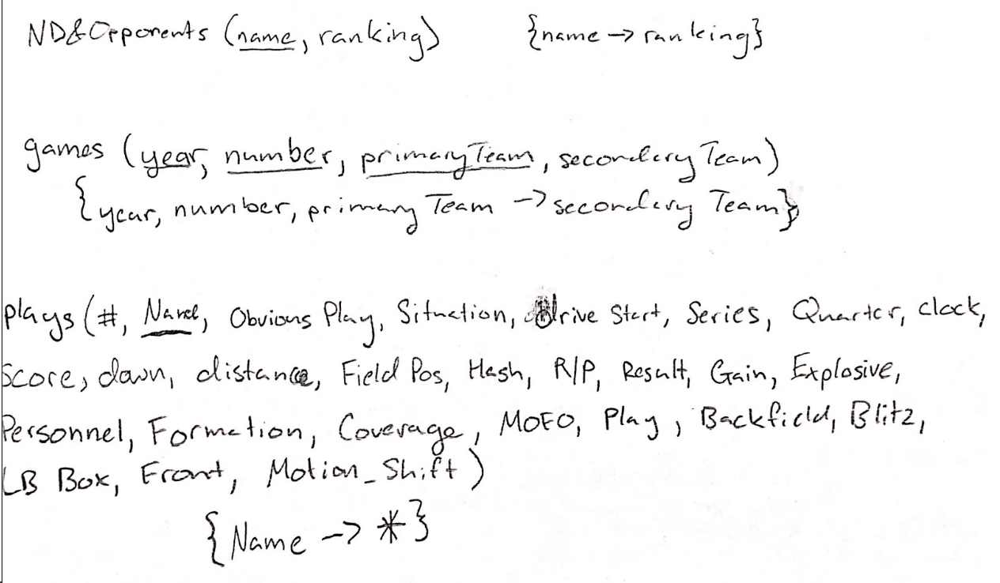

We get our data directly from Notre Dame Football through the Sports Analytics program. The data is given to us in the form of a .csv file. In the interest of security, the names of certain attributes (Play, Formation, Coverage, Blitz, etc.) are replaced with randomly generated 3 word strings from Python’s namegenerator library. These replacements correspond one to one to the values they are replacing. For instance the play name “13 BUBBLE ZIP GOLD” would be replaced with the same string everywhere it appears in the play attribute.
Work distribution:
- Matthew: Gather, transform data; Work on creating and implementing queries for MySQL database
- Jake: Front end design, make the webpage visually appealing and responsive; Possibly incorporate angular in the design
- Stephen: Front end work in HTML/CSS, overall generalist
- Kieran: Back end work, connect webpage to database using python
Timeline:
- Build relations on LAMP server (Oct. 12)
- Focus on insert, delete, update, and access queries (Nov. 5th)
- Add .csv file insertion to LAMP server (Nov. 12)
- Work on advanced functions to generate reports, predict plays, and/or, show heat maps of play choice (Nov. 28).
- Finalize front end and finish advanced functions (Dec 8)
- Live testing and last minute debugging (Dec 13)
Relational Schema
